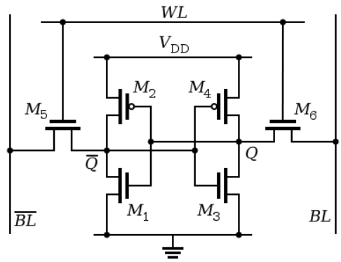
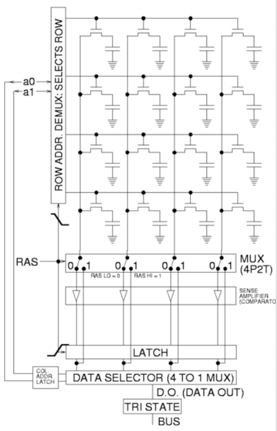
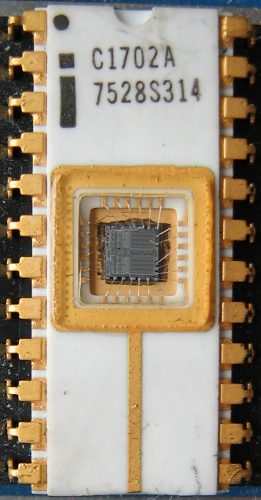

Research School of Engineering
ENGN8537: Embedded Systems and Real Time Digital Signal Processing
Open the
Memory Devices
HAL!
I'm sorry Dave. I'm afraid I can't do that.
I'm sorry Dave. I'm afraid I can't do that.
Categorisation
| Volatile | ↔ | Non-Volatile |
| Parallel | ↔ | Serial |
| Read-Only | ↔ | Writeable |
Memory types can be categorised many different ways. On top of the categories shown, a memory selection must also take in to account things such as capacity, latency, throughput, lifetime etc.
| Memory | Interface | Volatile | Writeable |
|---|---|---|---|
| SRAM | Parallel | Yes | Yes |
| DRAM | Parallel | Super | Yes |
| EPROM | Parallel/Serial | No | No |
| EEPROM | Parallel/Serial | No | Yes |
| FLASH | Parallel/Serial | No | Yes |
| FRAM | Serial | No | Yes |
SRAM
Static RAM
- Volatile
- Fast
- Low Density
- Low Power Consumption
Used In:
- Cache
- SoC-Internal RAM
- FPGA Block Ram

Static RAM stores the bit value in a pair of cross-coupled inverters: A Flip-Flop. Combined with the access transistors, this requires 6 transistors per bit. This is a lot compared with DRAM which we will see shortly. As such, it is quite low-density.
The value is stored at full system voltage so is quick to access (low voltages propagate more slowly that high voltages).
The Word Line is asserted if the cell is to be read or written. This connects the internal cell state \(Q, \bar{Q}\) to the Bit Lines.
To see how the cell works, imagine that the cell is storing a logical '1'; i.e. \(Q\) is a high voltage. This is connected across to the two transistors on the left of the cell; a high voltage turns the lower transistor on and the upper transistor off (the circle on the gate indicates inversion). This means that \(\bar{Q}\) is connected to ground. \(\bar{Q}\) is connected across to the right-hand transistors where it turns the upper transistor on, connecting \(Q\) to a high voltage and reinforcing the state.
DRAM
Dynamic RAM
- Very Volatile
- Moderately Fast
- High Density
- High Power Consumption
Used In:
- Computer Main Memory

DRAM stores the bit value of each cell in a capacitor: Charged is a logical '1', uncharged is a logical '0'. Each cell needs one transistor, the access transistor, to connect the capacitor to the bit lines for reading or writing.
DRAM is arranged as a grid, with the address being latched in in two stages: Row and Column.
The Row address is latched in first. At this time, all the cells in a row have their capacitors connected to the bit lines and down to a set of amplifiers. These are required as the voltage in the capacitors is quite small, but also because the capacitors discharge over time so the longer it has been since last time the row was accessed, the lower their voltage will be.
Once the row has been amplified and latched, the column address selects the required bits out of the latch.
At the same time, the latched values from the row are written back to the original cells. The act of reading a row discharges the capacitors in to the amplifier stage, so they must be written back to their original value or the data will be lost.
As mentioned, the capacitors self-discharge over time and as such must be refreshed all the time. This means that DRAM must be continuously read, even if you don't care about the data, just to make sure the data isn't corrupted. This is the 'dynamic' in DRAM and the reason it generally consumes more power than SRAM. DRAM controller hardware such as found inside the CPU or FGPA usually takes care of this refresh operation, the programmer doesn't know it is happening.
PROM
Programmable Read-only Memory
- Write-Once
- Low-Capacity
- One Fuse per Bit
- Rarely used nowdays
Historically Used In:
- Microcontroller Program Storage
PROM uses a series of fuses, one per bit. These are blown at programming time. Fuses can't be "un-blown" so the device can only be written once.
The unblown state is a logical '1' so a unprogrammed bytes have the value 0xFF, not 0x00.
EPROM
Erasable/Programmable Read-only Memory
- Write-Once per Erase
- Erase chip-at-a-time with UV Light
- Low-Capacity
- One FET per Bit
- Rarely used nowdays
Historically Used In:
- Microcontroller Program Storage

EPROM is made up of special Field-Effect Transistors (FETs) with an extra piece of metal under the regular gate - the floating gate. A high voltage on the control gate can suck electrons off the floating gate and leave it with a permanent charge. This charge in turn keeps the FET permanently on or off; this is the state of the bit.
UV light has enough energy to ionise the silicon and allow the charge on the floating gate to diffuse, erasing the value. Each erasure damages the silicon so a maximum number of erase cycles are specified before the floating gate will discharge itself.
Like PROM, the unprogrammed state is a logical '1' so a unprogrammed bytes have the value 0xFF, not 0x00.
"EPROM Intel C1702A" by Author : Poil 01:10, 17 Apr 2005 (UTC) - Author personnal collection.. Licensed under Creative Commons Attribution-Share Alike 3.0 via Wikimedia Commons - https://commons.wikimedia.org/wiki/File:EPROM_Intel_C1702A.jpg#mediaviewer/File:EPROM_Intel_C1702A.jpg
"Floating gate transistor" by en:Ctennis - en wikipedia. Licensed under Public domain via Wikimedia Commons - https://commons.wikimedia.org/wiki/File:Floating_gate_transistor.png#mediaviewer/File:Floating_gate_transistor.png
EEPROM
Electrically-Erasable/Programmable Read-only Memory
- Write-Once per Erase
- Low-Capacity
- One FET per Bit
- Long storage lifetime
Used In:
- Microcontroller Non-Volatile Data Storage
Compared to EPROM, EEPROM has an extra silicon layer that allows the floating gate charge to be dissipated electrically.
It is still used today for low-cost, low-capacity non-volatile data storage such as storing parameters in a microcontroller system.
FLASH
- Write-Once per Erase
- Page-Eraseable
- High Capacity
- Large number of erase cycles supported
Used In:
- Microcontroller Program Storage
- Solid-State Drives
- Memory Cards
- …
NOR Flash
NOR Flash is programmed by applying a voltage to both the word line and the bit line of a cell such that together, they are high enough to force charge on to the floating gate but individually they are not (i.e. they leave other cells unaffected).
To read, a charge is applied to a word line such that the sum of the charge on the word line and the floating gate is enough to turn the cell on (if it's programmed). If there is no charge on the floating gate (the cell is unprogrammed/ logical '1') then the word line voltage by itself is not enough to turn the cell on.
NOR Flash provides true random access (byte-level) so is suitable for storage of code, uncached data etc. The structure takes up more space than NAND flash and so is lower density.
"NOR flash layout" by Cyferz (talk) - the English language Wikipedia (log). Licensed under Creative Commons Attribution-Share Alike 3.0 via Wikimedia Commons - https://commons.wikimedia.org/wiki/File:NOR_flash_layout.svg#mediaviewer/File:NOR_flash_layout.svg
NAND Flash
NAND Flash is programmed and read in the same way as NOR flash, however in order for a cell to be accessed, all the other cells in the chain need to be forced 'on' by applying a sufficiently high voltage to their word lines.
That is, to read cell '2' in a chain of 8, a high voltage is applied to the word lines of all the other cells in the chain as well as the ground select and access transistors. A 'read' voltage; a smaller voltage not enough to turn the transistor on by itself, is applied to cell 2.
In this way, the voltage at the bit line depends on the charge on the floating gate of cell 2 only: If there is enough charge there to combine with the word line read voltage to turn the cell on, the bit line will be pulled low. If not, the line will be left floating (logical '1').
This structure is more dense than NOR so higher capacity devices are built this way. A failure of a single cell in the chain corrupts all the cells in the chain, so NAND is less robust.
"Nand flash structure" by Cyferz - en wikipedia. Licensed under Creative Commons Attribution-Share Alike 3.0 via Wikimedia Commons - https://commons.wikimedia.org/wiki/File:Nand_flash_structure.svg#mediaviewer/File:Nand_flash_structure.svg
FRAM
Ferroelectric RAM
- Speed of DRAM
- Capacity of SRAM
- Non-Volatile
- Unlimited erase/program cycles
Used In:
- Microcontroller Non-Volatile Data Storage
Ferroelectric RAM (FRAM/FeRAM) is a relatively new technology. It boasts non-volatility but is not limited in erase cycles like flash and is also much faster.
Over the next several years, it is likely that FRAM will scale to take the place of traditional DRAM applications such as computer main memory, but with lower running power consumption (no refresh required) and data retention across power cycles. This will give faster boot times.
At the moment, FRAM devices are limited to several hundred kB.